How to use GCC Admin, the church's app for disciples, cell groups, soul winning and Sunday attendance. For leaders, pastors and admins.
Open GCC Admin and sign in with your account. The first time, you'll see Waiting for access. An admin then gives you a role under Users, and the app opens the next time you visit.
| Role | What you see and do |
|---|---|
| Leader | Your own network: your disciples, the people they handle, and your cell reports. You can change only the disciples in your network. |
| Pastor | A leader who can see every network. |
| Admin | Everything, plus the Admin pages: Leaders, Users, lessons and promoting primary leaders. |
GCC Admin works best installed, like an app. In Safari tap Share › Add to Home Screen. In Chrome tap ⋮ › Install app. Once it's installed, the attendance sheet keeps working with no signal (see Attendance).
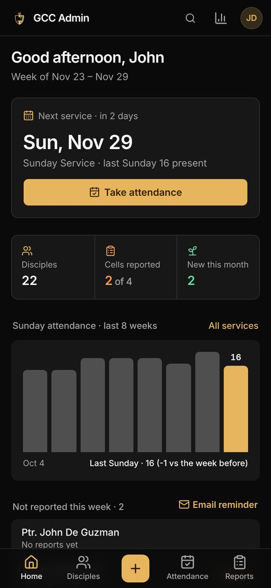
Home is the week at a glance, from top to bottom:
Tap + in the bottom bar from any page. Choose what to add:
| Cell report | Who came, and the lesson |
| Disciple | Someone new in your network |
| Soul winning | A session and who believed |
| Consolidation | A follow-up with a new believer |
| Service or event | A sheet to take attendance on |
Each page also has its own button at the top right (Add, New or + Service) that does the same thing.
Forms with several steps show their steps at the top, with Back and Next at the foot of the screen.
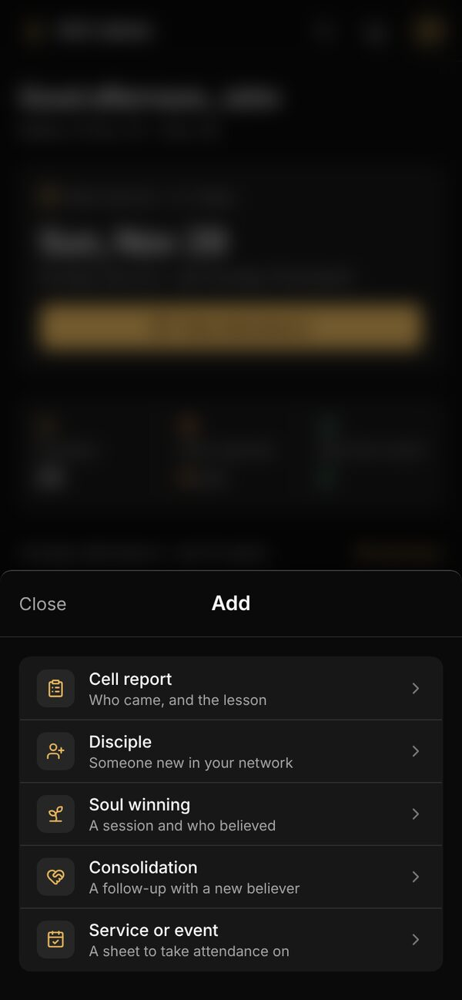
| Badge | Meaning |
|---|---|
| NACS | Church status: has not yet attended a church service |
| ACS | Church status: has attended a church service, not yet regular |
| 1st / 2nd / 3rd timer | Cell status: how many times they've been to a cell group |
Add opens the disciple form: name, gender, birthdate, phone, address, member type, cell status, church status, network leader, who handles them, and their growth step. Choices are chips: tap one.
⋯ (Import / export) gives Export to Excel (the list as it's filtered) and Import from Excel. To import, choose an Excel (.xlsx) or CSV file and the network the people join.
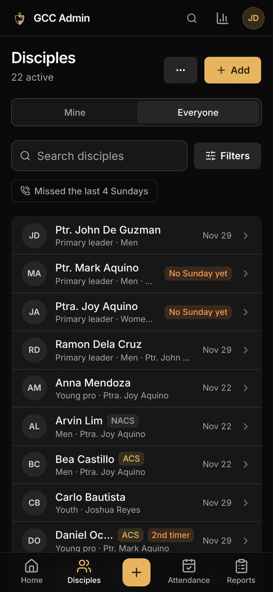
Tap a disciple to open their page. Under their name:
Then, scrolling down:
| Edit | Change their details. |
| Mark inactive | Takes them off the lists and sheets without deleting them. Mark active brings them back. |
| Make primary leader | Admins only. "Remove as primary leader" undoes it. |
| Link account | Admins only, for primary leaders: connects the leader's sign-in. |
| Delete | Removes them from lists and sheets, and their portal link stops working. Past cell groups keep their name. |
You can change only disciples in your own network. Admins can change anyone.
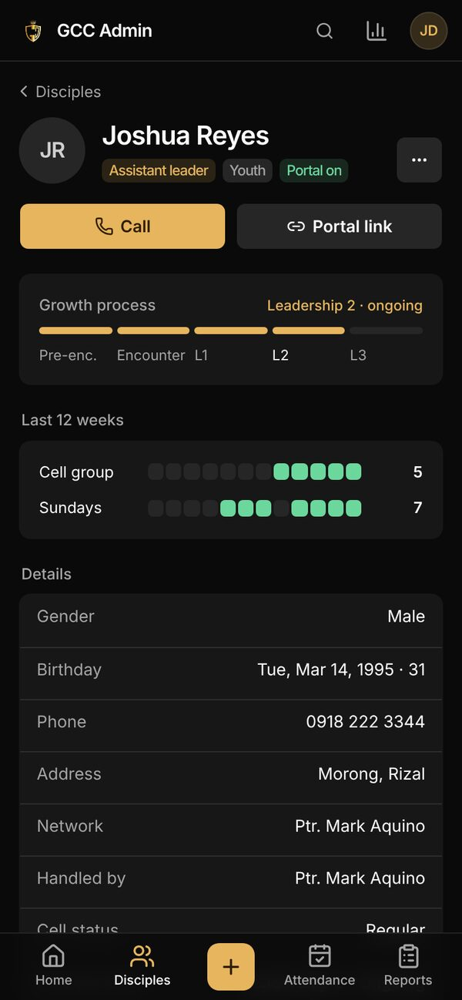
Each disciple can have a private page, the Disciple portal, that they open with a link and no sign-in. On it they see their leader, what's coming up, their growth and attendance, and can fix their own phone and address. Assistant leaders can also add the people they handle and report cell groups, soul winning and consolidation from it.
See the separate Disciple Portal Guide to share with your disciples.
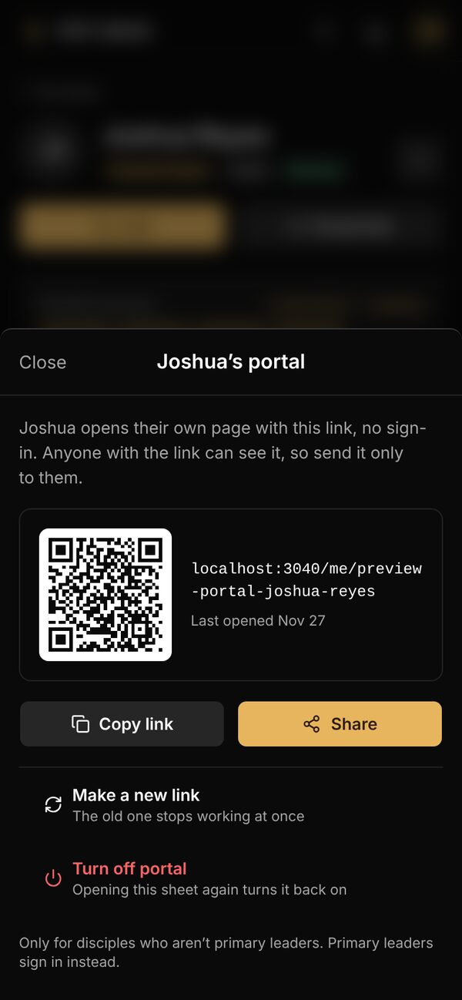
Reports in the bottom bar opens cell reports. Cell groups | Soul winning at the top switches to soul winning.
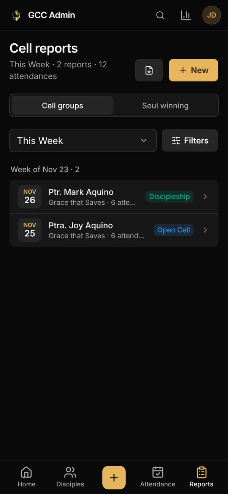
Tap New (or + › Cell report). The form has three steps:
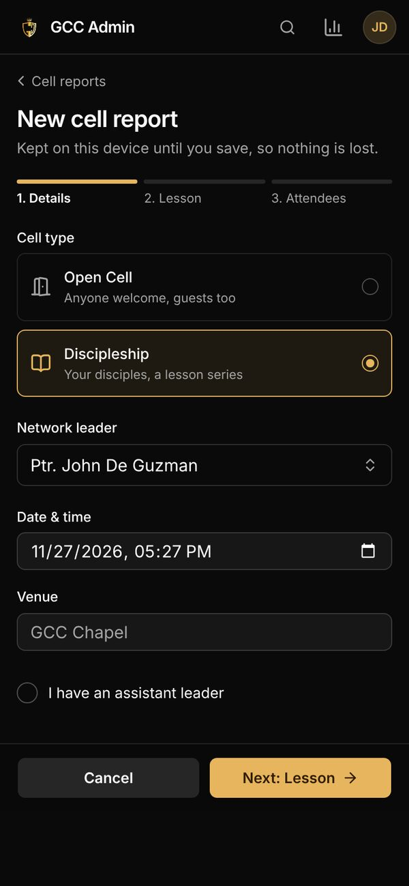
Open it from Reports › Soul winning or from More. It shows how many soul-winning and consolidation sessions there were and how many new believers were recorded in the chosen period, with each session below.
Tap a new believer to see the lessons they've taken (ticked), their sessions, and their contact details. From there you can Edit or Delete them, or Make disciple once they're ready to join a cell group.
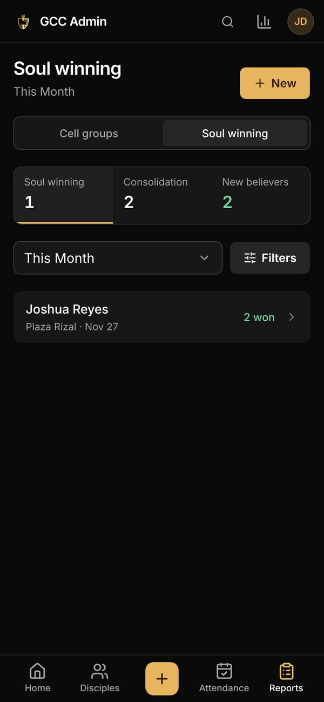
Attendance lists every service and event. Services | Guests at the top switches to the guests list.
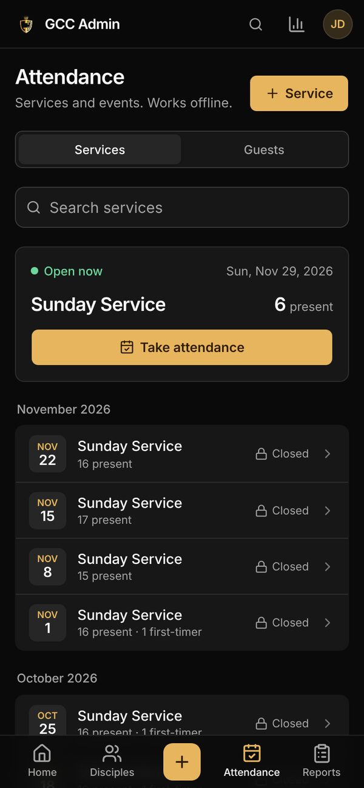
Open a service to see its sheet.
The Guests tab shows First-timers today, guests who are Back today (with their visit count), and those who Came before. Tap a guest to mark them. The ⋯ on a guest has Make disciple, Edit details and Not here today.
When you're done, tap Close service at the end of the list (or in the ⋯ menu at the top) and confirm. Closing locks the sheet so it can't change by mistake. Reopen unlocks it.
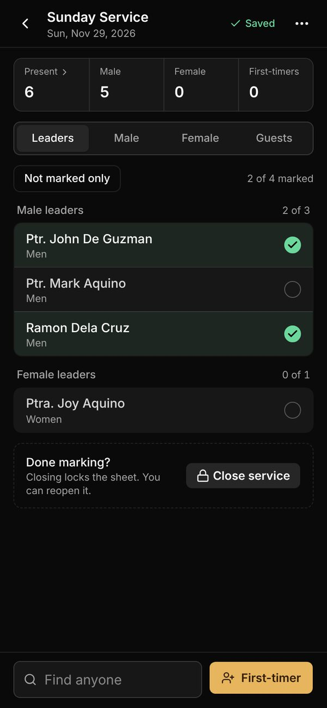
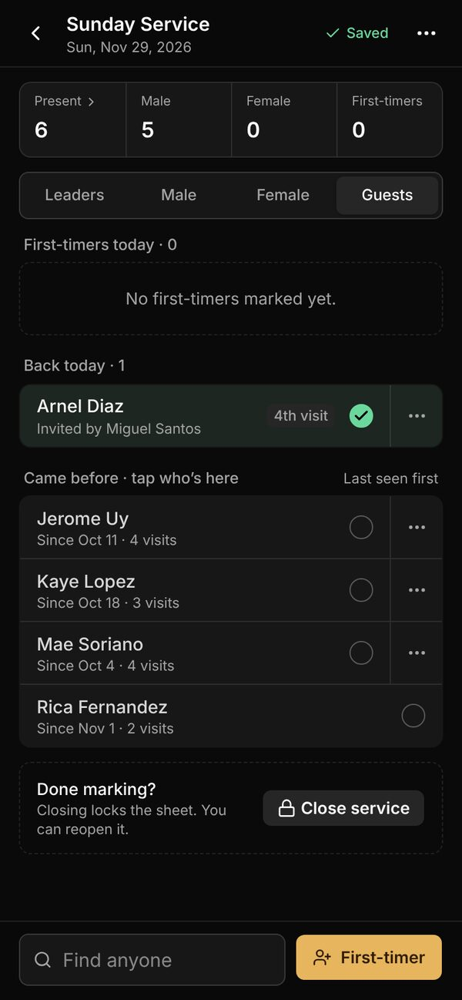
Attendance › Guests (also on Home and in More) lists everyone who came to a service but isn't a disciple yet.
A first-timer is counted by the date of their first service, so last week's first-timers still show as first-timers on last week's sheet.
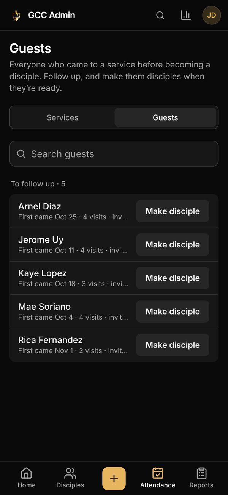
Open Insights from the chart icon in the top bar, or from More. Whole church | My network chooses whose numbers you see.
Admins and pastors have Send a report. Pick last week or last month and the summary appears as a picture. Download image or Share it to a group chat, or Email report to every admin and pastor. It's sent only when you tap, never automatically, and once per period.
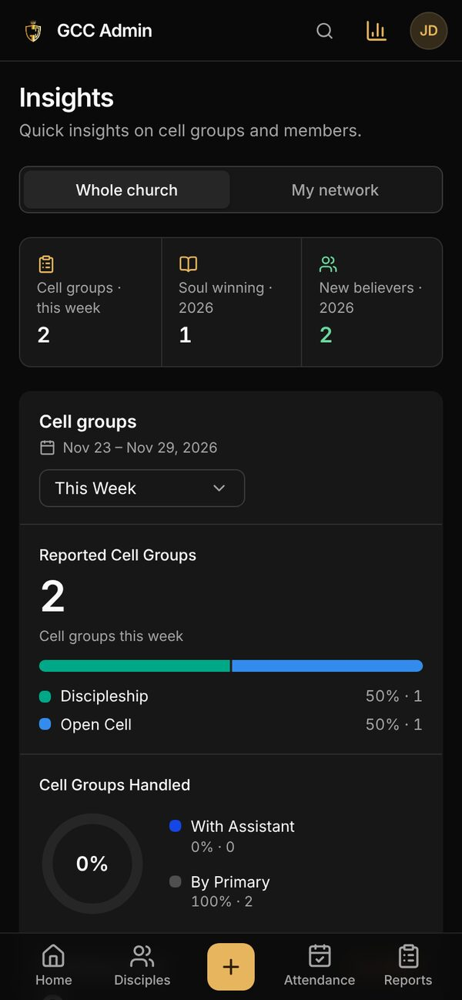
Tap your initials at the top right.
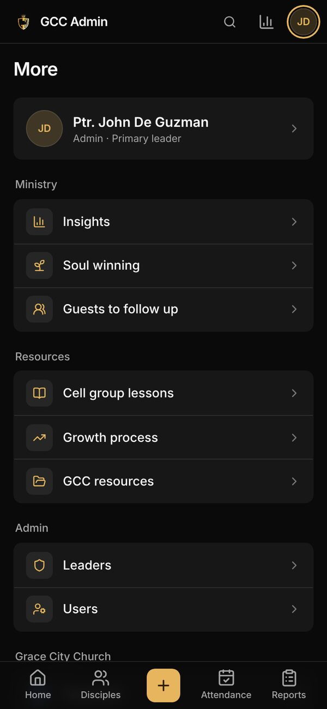
Every primary leader, how many disciples they have, whether they can sign in, and whether they've Reported this week or Not yet. To make someone a primary leader, open them in Disciples and use ⋯ › Make primary leader. To connect a leader's sign-in, use ⋯ › Link account on their page.
Every account that has signed in. Open one to give it a role (Admin or Leader) and, for pastors, the Pastor switch to see every network. The change applies the next time they open the app. New accounts wait here until they're given access.
The lesson series leaders choose from when they file a report. New series adds one. Open a series to see its lessons in order, their scripture, and how often each was taught. Edit changes the series and its lessons.
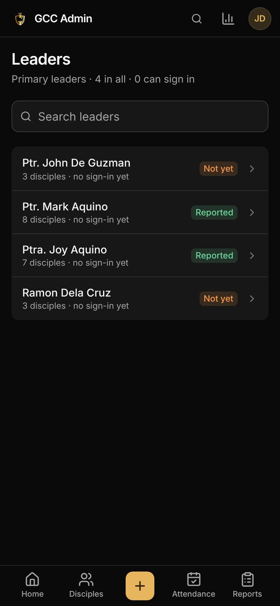
Where the whole church is in the Growth Process System: how many people are at each step (None yet, Pre-encounter, Encounter, Leadership 1, 2 and 3) and how many are still ongoing. Tap a step to see who's there and whether they've finished it.
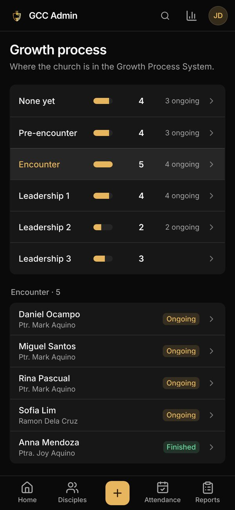
An admin needs to give your account a role under More › Users. Then open the app again.
Only their leader (or the one who handles them) and admins can change a disciple.
Keep marking. Taps are kept on your phone and sent when you're back online. Wait for Saved before closing the app.
Open it and tap Reopen.
Use Make disciple on the guest (on the Guests page or the sheet's ⋯). Don't add them again as a new disciple: their visits would be split.
Use ⋯ › Mark inactive rather than Delete. They leave the lists but their history stays, and you can mark them active again.
Open the disciple, tap Portal link › Make a new link, and send them the new one. The old link stops working at once.
Only when someone acts: a reminder from Home, an emailed report from Insights, or a disciple filing a cell report from their portal (their network leader gets an email). Nothing is sent on a schedule.